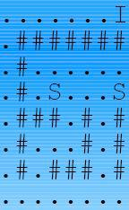

Búsqueda en anchura (BFS) y Búsqueda en profundidad (DFS)
Búsqueda en anchura y búsqueda en profundidad son dos algoritmos para recorrer o buscar elementos en un grafo.

Búsqueda en Anchura
Intuitivamente, se comienza en la raíz (eligiendo algún nodo como elemento raíz en el caso de un grafo) y se exploran todos los vecinos de este nodo. A continuación para cada uno de los vecinos se exploran sus respectivos vecinos adyacentes, y así hasta que se recorra todo el árbol.
Implementación de BFS
metodo BFS(grafo, nodo_origen):
creamos una cola Q
agregamos el nodo_origen a la cola Q
marcamos nodo_origen como visitado
mientras Q no esté vacío:
sacamos un elemento de la cola Q (lo llamamos v)
para cada vertice w adyacente a v:
si w no ha sido marcado como visitado
marcamos w como visitado
insertamos w en la cola Q


Ejemplo
Tenemos una matriz de caracteres que representa un laberinto 2D un ‘#’ implica un muro, un ‘.’ implica un espacio libre, un ‘I’ indica la entrada del laberinto y una ‘S’ indica una salida. ¿Cuanto mide la ruta mas corta para escapar?
Posibles estados adyacentes:
- (x, y + 1)
- (x, y - 1)
- (x + 1, y)
- (x - 1, y)
Estructuras a utilizar
static char ady[] [] = new char[ 100 ] [ 100 ];
static class Estado{
int x , y , d;
public Estado( int x1, int y1 , int d1){
this.x = x1;
this.y = y1;
this.d = d1;
}
};
Método BFS
public static int BFS( int x , int y , int h , int w ){
boolean visitado[] [] = new boolean[ 100 ] [ 100 ];
Queue<Estado> Q = new LinkedList<Estado>();
Q.add( new Estado( x , y , 0 ) );
visitado[x][y] = true;
int dx[ ] = { 0 , 0 , 1 , -1 };
int dy[ ] = { 1 , -1 , 0 , 0 };
int nx , ny;
while( !Q.isEmpty() ){
Estado actual = Q.remove();
if( ady[actual.x] [actual.y] == 'S' ){
return actual.d;
}
for( int i = 0 ; i < 4 ; ++i ){
nx = dx[ i ] + actual.x;
ny = dy[ i ] + actual.y;
if( nx >= 0 && nx < h && ny >= 0 && ny < w && !visitado[nx] [ny] && ady[nx] [ny] != '#' ){
Q.add( new Estado( nx , ny , actual.d + 1 ) );
visitado[nx][ny] = true;
}
}
}
return -1;
}
Búsqueda en profundidad
Su funcionamiento consiste en ir expandiendo todos y cada uno de los nodos que va localizando, de forma recurrente, en un camino concreto. Cuando ya no quedan más nodos que visitar en dicho camino, regresa, de modo que repite el mismo proceso con cada uno de los hermanos del nodo ya procesado.

Implementación de DFS
metodo DFS(nodo_origen):
marcamos origen como visitado
para cada vertice v adyacente a origen en el grafo:
si v no ha sido visitado:
marcamos como visitado v
llamamos recursivamente DFS(v)

Ejemplo
Tenemos una matriz de caracteres que representa un laberinto 2D un ‘#’ implica un muro, un ‘.’ implica un espacio libre, un ‘I’ indica la entrada del laberinto y una ‘S’ indica una salida. ¿Es posible llegar a una salida?
Estructuras
static char ady[] [] = new char[100] [100];
static boolean visitado[] [] = new boolean[100] [100];
public static boolean DFS( int x , int y , int h , int w ){
if(ady[x] [y]=='S'){
return true;
}
visitado[x][y] = true;
int dx[ ] = { 0 , 0 , 1 , -1 };
int dy[ ] = { 1 , -1 , 0 , 0 };
int nx , ny;
for( int i = 0 ; i < 4 ; ++i ){
nx = dx[ i ] + x;
ny = dy[ i ] + y;
if( nx >= 0 && nx < h && ny >= 0 && ny < w && !visitado[ nx ][ ny ] && ady[ nx ][ ny ] != '#' ){
visitado[nx] [ny] = true;
if( DFS (nx, ny, h, w) ){
return true;
}
}
}
return false;
}
Comparación BFS vs. DFS